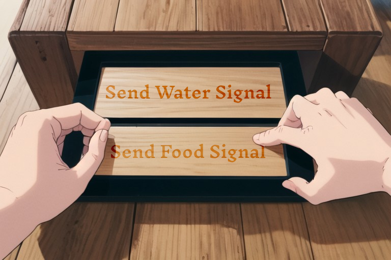

Imagine if backpackers could request fresh food to be delivered to them on top of the mountain that they climb & it be delivered to them by drone. I've organized hiking trips and found that current backpacking food poses some challenges. For one, it is additional weight (both the food and the subsequent trash that it creates), secondly it is pretty expensive, and most importantly people don't enjoy eating it.
Imagine a world where you hike to the top of the mountain and then you can send a radio request using an ordering station for a meal to be delivered to you. The drone can come with it's fresh food and heat it on-arrival (meaning you don't have to carry a stove or propane fuel). It can then take the food container back to its home station where the fresh food is prepared.
There's also the problem of bears being attracted to the food that humans carry on them and put near their tent / hammock. Having the food come on-demand and taking the bear-attracting scent with that drone removes that risk of bears coming into tents to steal food scraps. It's also possible that the drone could bring water which would futher reduce the amount of supplies that hikers need to bring with them.